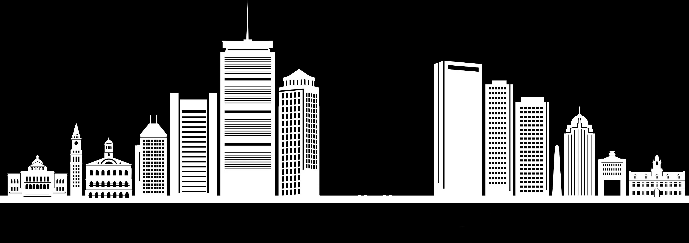

Construction lasted 4 years from 1998 to 2002
Designed by Swiss engineer Christian Menn and architect Miguel Rosales.
The world's largest asymmetrical cable-stayed bridge
The first asymmetrical cable-stayed bridge to be built in the United States.
It is generally lit blue, but it could be green for the Celtics, gold for the Bruins, red for the Red Sox